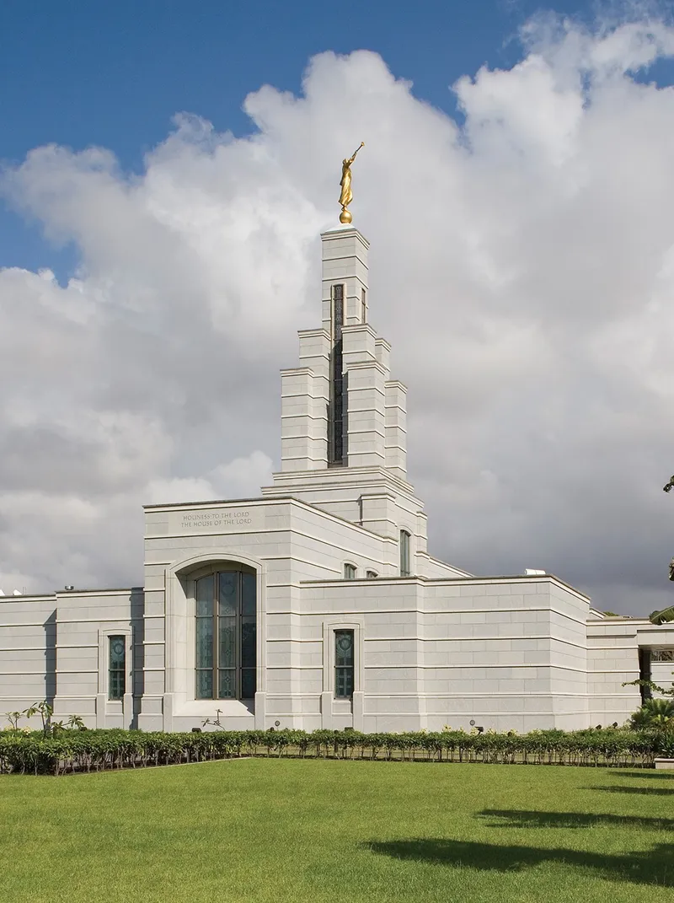
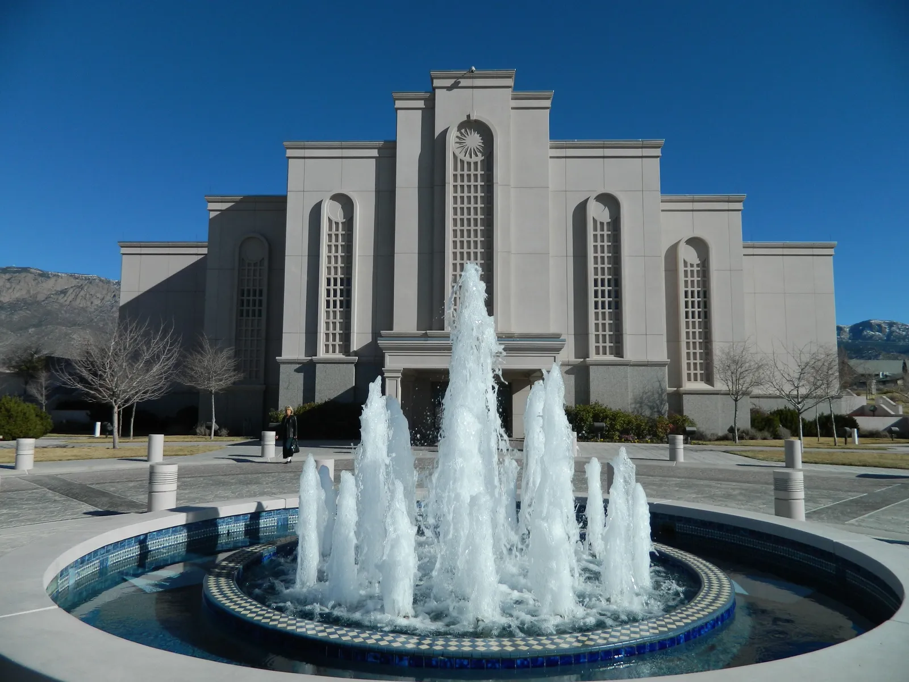
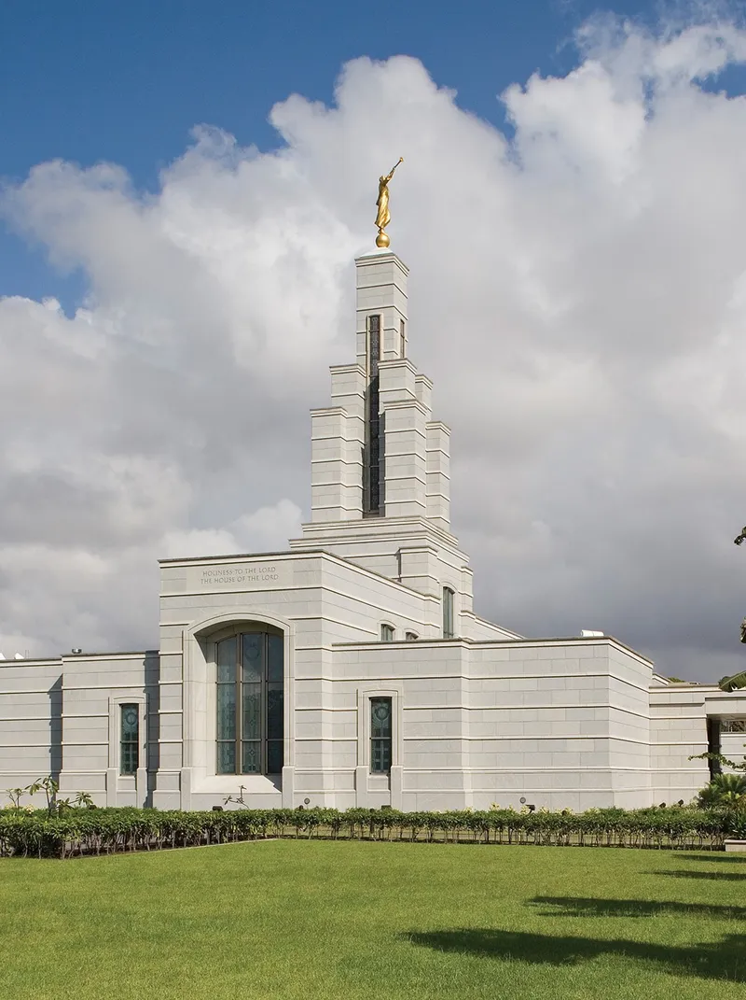
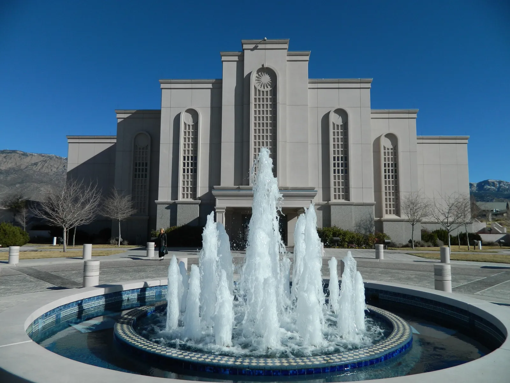
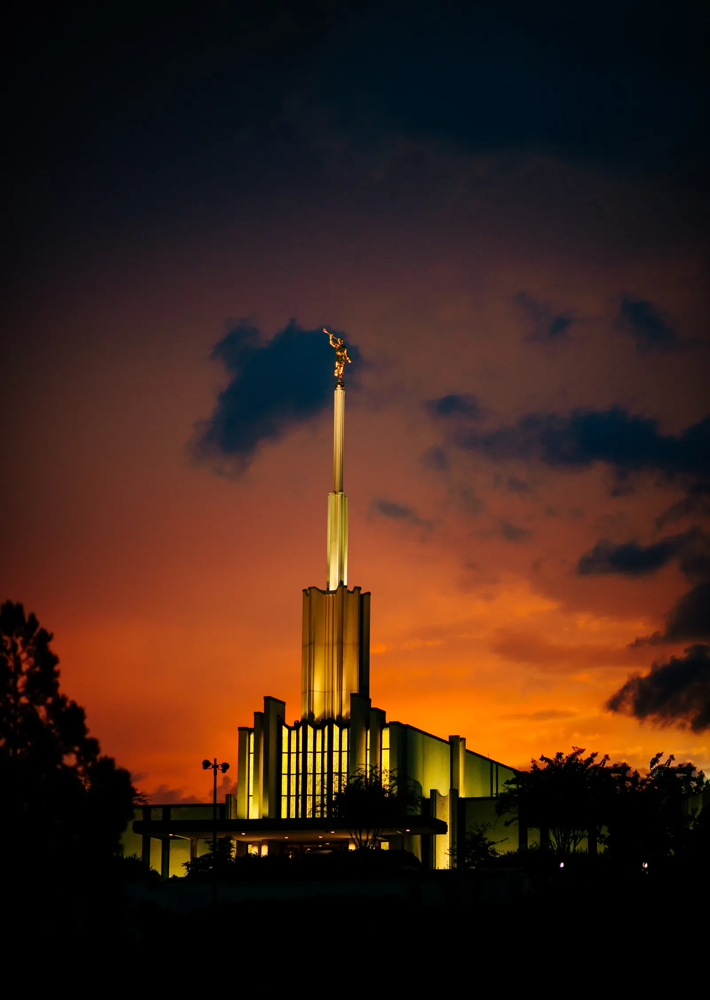
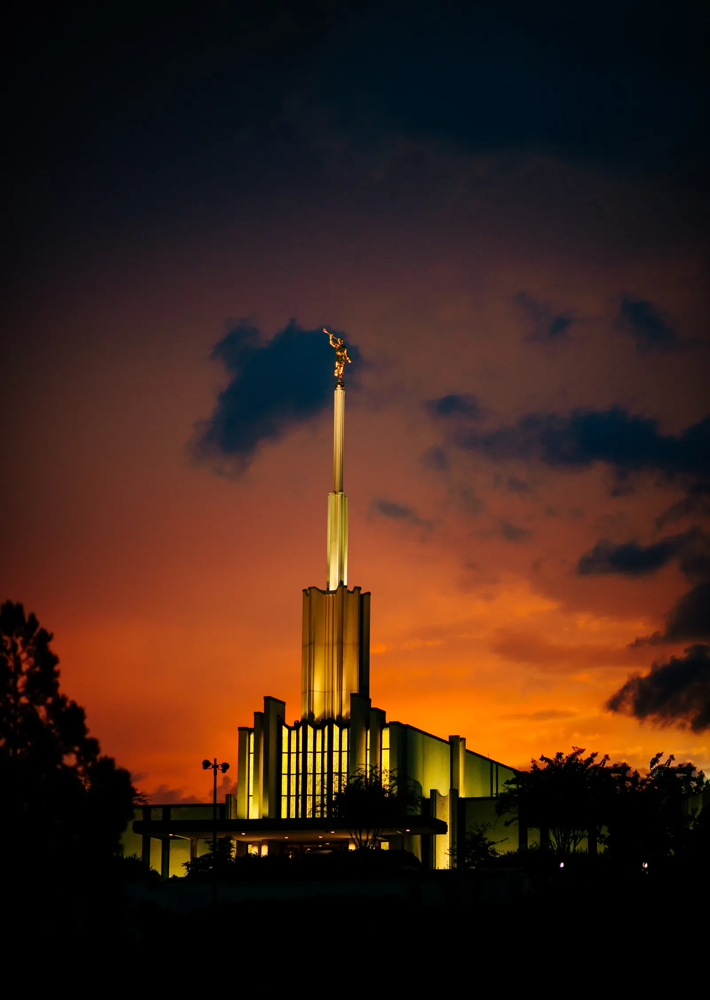

Temple Album - LDS Temples
Temple Collection
 Aba Nigeria LDS Temple

accra ghana temple lds
adelaide australia temple lds

albuquerque temple lds
Aba Nigeria LDS Temple

accra ghana temple lds
adelaide australia temple lds

albuquerque temple lds
 anchorage_temple_lds

atlanta_georgia_temple_sunset
anchorage_temple_lds

atlanta_georgia_temple_sunset
 paraguay_temple
rendering_abidjan_ivory_coast_temple
paraguay_temple
rendering_abidjan_ivory_coast_temple